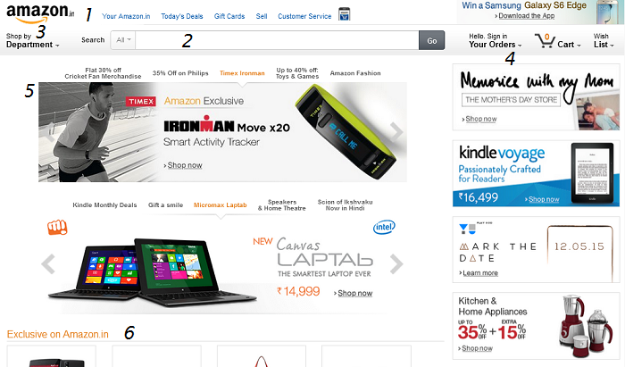
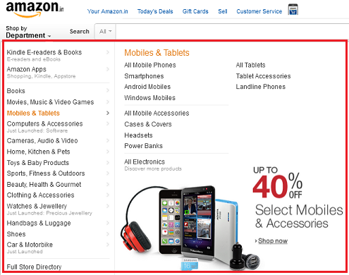
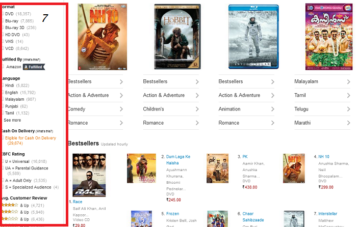

Amazon has uses several design structures to categorize their products. Refer the points to their respective reference numbers in the screenshots.
1. For current users, that feature shows most relevant details about customer service , best deals and their account.

2. Search bar for users to type what they want and get best search results

3. On hovering over the shop by department, different sections appear in a drop down list that expand into subsections
4. On the right, they have their most attractive products, that amazon specially endorses or those that are currently best sellers
5. This shows the most popular categories at present, including some discount sales that makes it easier to see what’s trending
6. Section for amazon exclusive products. These are the products that are only sold on Amazon.in

7. On clicking an item, on the left, there is a bar where you can sort the results based on your needs, such as price or manufacturer.
Items related to your browsing history